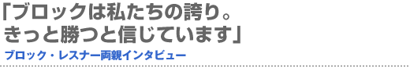
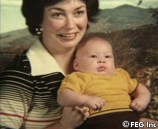
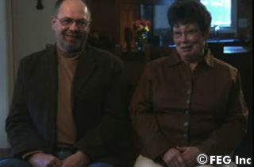
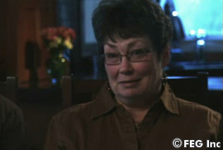
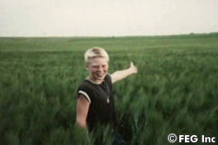
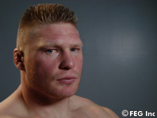

ブロック・レスナー本人に続き、今度は彼の両親のインタビューにも成功！ 父親のリチャードさん、母親のステファニーさんに、レスナーの小さい頃の話をしてもらった。二人は、『SoftBank presents Dynamite!! USA in association with ProElite』（6月2日＝現地時間、アメリカ・『ロサンゼルス・メモリアル・コロシアム』）へ応援に行くつもりだという。
脇に手を入れてブッと音を鳴らしていた
 ――レスナー選手は、どんなお子さんだったのでしょうか。
母 ブロックは子供の頃から、元気いっぱいだったわ。いつもやることを探し回っていたの。農場での手伝いも好きで、よく働いてくれたわね。
父 冗談が大好きで、お客さんが来たときに、脇に手を入れて音を出していたよ。ブーってね（笑）。
――家では、どのような手伝いをしていたのですか。
父 動物の世話をしたり、あとは牧乾草を作ったりだね。それに動物に餌をやっていて（2.2kgのバケツで）そうやって体を鍛えていたな。6、7歳のとき、彼に小さなトラクターを買ってあげたんだ。すると、ブロックは手伝いたいと言ってくれた。運転するのには若すぎたんだろうけど、農場はそういう制限がないからね。
母 牛から牛乳を搾っていたわ。
父 そうだな。牛乳を搾っていたし、豚もいたし、ショーに牛を出していたな。賞を取ったかどうかは覚えていないけど、よくやったよ。もうちょっと大きくなってからスポーツをやるようになったけど、農場も大いに手伝ってくれた。自転車もあったな。乗りまくってた。子供の頃はよく遊んだよ。小1でレスリングを始めた…AAUだっけ？いろいろな試合を回ったよ。ユニフォームがブカブカで、大きすぎる写真がどっかにあるよ。中学校からアメリカンフットボールもやっていた。まだ細かったけど、運動には向いていたと思う。コーチがもっと小さい子が使うような動き、速い動きを教えてくれたから、レスリングを始めてからも素早く動けたんだ。レスリングの友達とは仲がよく、小1から高校を卒業するまで一緒だったね。コーチは今も隣に住んでるよ。コーチも農民だからね。
母 でも、高校時代はチャンピオンにならなかった。一番、大きな勝利は短大のトーナメントで勝ったときね。NCAAを勝利したとき、人生で一番、盛り上がったわ。彼の夢も私たちの夢も叶ったの。母としては、どんな試合でも勝って欲しかったわ。
レスリング時代から大人気よ
 ――それは興奮したでしょうね。
母 もちろん。うちの人は心臓発作になるかと心配するほど、興奮していたわよ。
父 もう一つ、ピリオドが残っていると思っていたんだ。彼女が勝ったと言っても、信じなかったんだよ。ビズマークにいた頃からファンが多かったけど、ミネソタ大学に勧誘されたとき、故郷のウェブスター町から、何台かの満員バスが観客を試合に送っていたよ。
母 ブロックがレスリングをしていたとき、ミネソタ大学のアリーナは満員だった。そこまでなったことがなかったらしいわよ。
父 たしかターゲットセンターに場所を変えた。大いに盛り上がったよ。
母 最初にブロックがプロレスをすると言った時は正直な話、嬉しくはなかったの。だって、アメフトに行ってほしかったから。チャンスはあったしね。でも彼は、自分のやりたいことをやるって言って貫いたわ。
父 いろんな人が彼は五輪に行くべきだと言っていたけど、あまりお金に恵まれていたわけではなかったからね。どちらかと言うと必死だったんだよ。若いから人生を楽しむべきだと思って、賛成したんだ。それでも人気はあったから、我々はそれでよかったんだ。
息子と私は趣味が似ている
 ――次はMMAですが、どうですか？
母 とても心配だけど、彼を信じているわ。彼は競争主義だから、絶対に成功すると思うの。
父 人生の新たな一章が始まる。そんなに心配はしていないし、厳しいトレーニングに集中している。やってみないとどうなるか分からないけど、楽しみにしているよ。
母 奥さんも私たち家族も、彼の支えになっているわ。
――これまでMMAをご覧になったことはありますか？
母 テレビで放送した試合しか見たことはないけど、大体は分かっているわ。
――対戦相手のことは知っていますか？
母 見せてと言っているんですけど、ブロックは試合まで見るなって言っていたから知らないの。
父 たしか、とても背が大きいとは聞いているよ。いい成績も収めているってね。できるだけ早くグラウンドに持ち込む作戦だろう。あとは知らないな。
ブロックは目標に向かって突っ走るタイプ
 ――レスナー選手の新しい一章が始まりますが、どうなるのでしょうか。
父 いろんな経験をして、少しずつ大人になってきた。プライベートが落ちついて、すべてがいい方向にいくと思う。試合次第だけど、うまく盛り上がれば成功だろう。
――トップにたどり着けると思いますか？
母 とても集中するタイプなの。どういうつもりで入ったかは分からないけど、何をやっても成功するわよ。
父 ブロックは目標に向かって突っ走るタイプだ。頑固なほどにね。自分の失敗から学ぶタイプの人間なんだよ。少し時間がかかったとしても、必ず成功するよ。今回はリアルファイトだから、慣れるのに時間が必要だろうけど、大丈夫だよ。
母 母として耐えられるかは分からないけど、試合は見に行きます。でも、なるべく遠い席がいいわね。
父 一緒に仕事をしていてね、たまに意見が合わないときもあるんだよ。大変な時代に育った私の世代は壊れたものをすぐには捨てない。できるだけ長く使うんだ。彼はよく「新しいものを買ったら」と言うけどね。我々が頑固なのかもしれないが。
――トレーラーの会社を運営されているみたいですね。
父 一緒にトレーラートラックの会社を経営しているんだ。これから大きくしていこうと思っているよ。一緒にハンティングやフィッシングをやっている。家が近いからできるんだ。もう二人の息子はできないから残念だよ。もっと一緒にいれたらな。私とブロックは趣味が似ているんだよ。大きなトラックとかね。
 ――最後に息子さんに激励のメッセージをお願いします。
母 ブロック、ベストを尽くすと分かっているわ。100％信じています。
父 ベストを尽くすだろう。大変なトレーニングをしているしね。健闘を祈るよ。
母 愛しているわ。
父 愛している。母さんと父さんは試合を見て応援しているから頑張ってほしいね。■
|